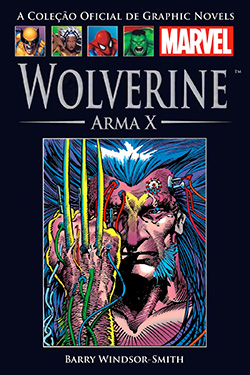

Wolverine ArmaX - Marc Cerasini
Sobre o livro:
Um violento andarilho com um passado misterioso torna-se cobaia de um experimento biotecnológico ultrassecreto. Logan, ex-membro das Forças Especiais do Canadá, é capturado por um grupo de cientistas e levado a um complexo de pesquisa nas Montanhas Rochosas Canadenses.Lá, sob direção do brilhante, inescrupuloso e enigmático Professor, Logan é submetido a um agonizante processo que visa despertar seus poderes mutantes e transformá-lo em Arma X – um incessante e indestrutível gerador de caos com garras de adamantium retráteis e a habilidade de se regenerar de qualquer lesão.O Professor deseja possuir e controlar sua máquina mortífera. Para atingir seus objetivos, alia-se a cientistas brilhantes, e Dr. Abraham B. Cornelius, inovador imunologista procurado pelo assassinato de sua esposa e filho.Os três invadem e torturam a mente e o corpo de Logan. Com o ímpeto de metamorfosear homem em monstro, os cientistas subestimam a força inabalável de Logan. E os resultados podem ser catastróficos.Para todos os envolvidos, a vida torna-se mais preciosa, e a morte, iminente.Nasce um Frankenstein moderno.
Imagens:
Onde Encontrar?
Estante 01, Prateleira 02, Seção C
Código do Livro
2475
Outras informações:
- Número de páginas: 348;
- Autor: Marc Cerasini(1952);
- Editora: Novo século.